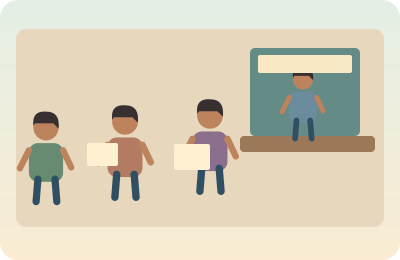

थीसिस और संरचना
Thesis and structure
Audio uses your device’s Hindi voice; availability varies. No native recordings included.मुख्य अवधारणा
Understand the conceptनिबंध का विश्लेषण करते समय विषय, केंद्रीय दावा, प्रमाण और निष्कर्ष अलग करें। तार्किक क्रम और उदाहरणों की प्रासंगिकता जाँचें।

शब्द और अर्थ
Vocabularyप्रतिपाद्य
thesisतर्क
argumentप्रमाण
evidenceनिष्कर्ष
conclusionप्रस्तावना
introductionविश्लेषण प्रयोगशाला
Analysis labसही विकल्प चुनें और पाठगत या भाषिक कारण पढ़ें।
प्रतिपाद्य
उत्तर और कारण
मुख्य दावा — केंद्रीय विचार पर विशिष्ट दावा।
उदाहरण और पठन
Examples & readingलेख की शुरुआत प्रश्न से हो सकती है।
हर अनुच्छेद केंद्रीय विचार से जुड़े।
निष्कर्ष नए प्रमाण का विकल्प नहीं।
बोलें और सोचें
Apply itएक निबंध के प्रत्येक अनुच्छेद का एक वाक्य में कार्य लिखें।
लेखन अभ्यास
Writing practiceमुख्य दावा स्पष्ट रखें।
मुख्य दावा स्पष्ट रखें।
उदाहरण का विश्लेषण करें, फिर अपना स्वतंत्र उत्तर प्रमाण सहित लिखें।
स्वतंत्र लेखन कक्ष
Writing workspace0 शब्द
निजी जानकारी न लिखें। मसौदा सहेजना वैकल्पिक है; कोई सर्वर या स्वचालित मूल्यांकन नहीं।अपना ज्ञान जाँचें
Check your learningप्रतिपाद्य और विषय में क्या फर्क है?
उत्तर देखें
विषय चर्चा का क्षेत्र है; प्रतिपाद्य उस पर लेखक का मुख्य दावा है।
इस पाठ में दिए गए अर्थ से शब्द मिलाएँ: thesis
उत्तर
प्रतिपाद्य
कार्यपत्रक · Worksheet
Completion is self-marked and saved locally.